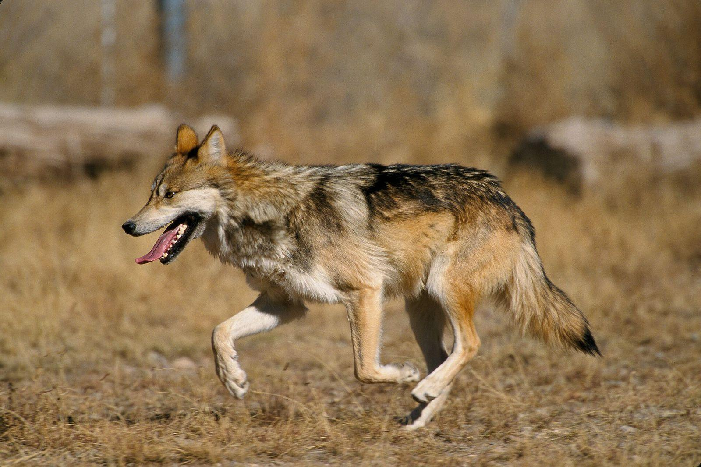
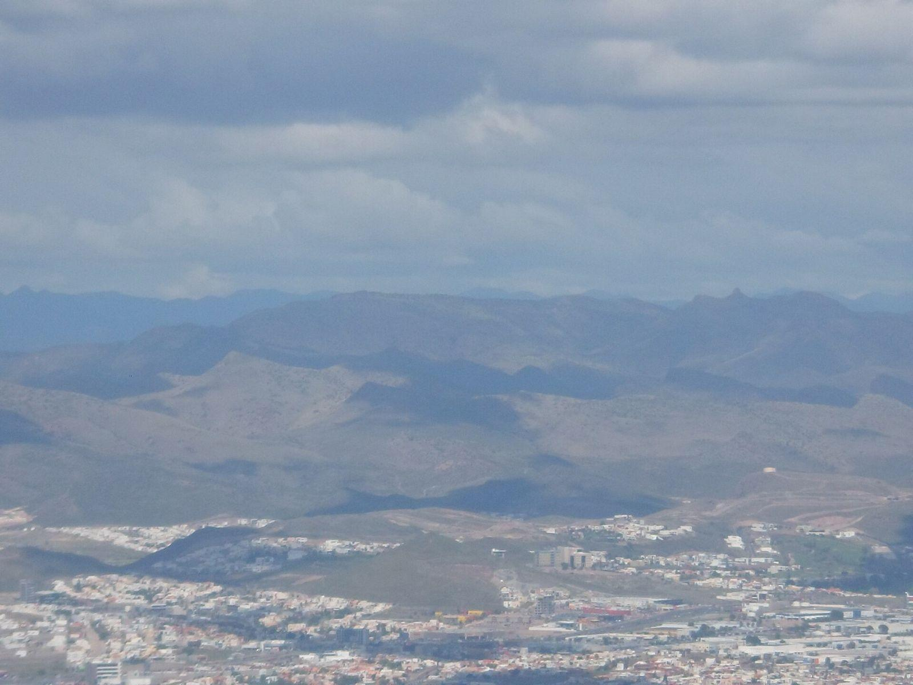
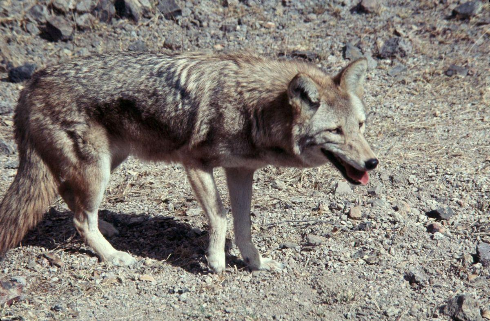
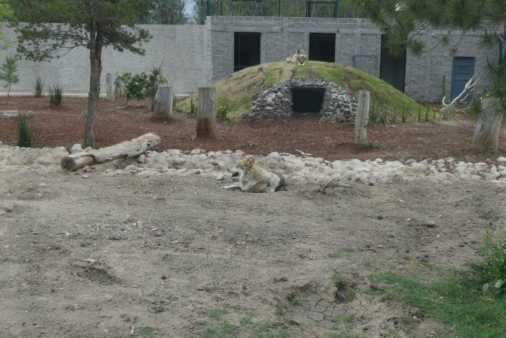
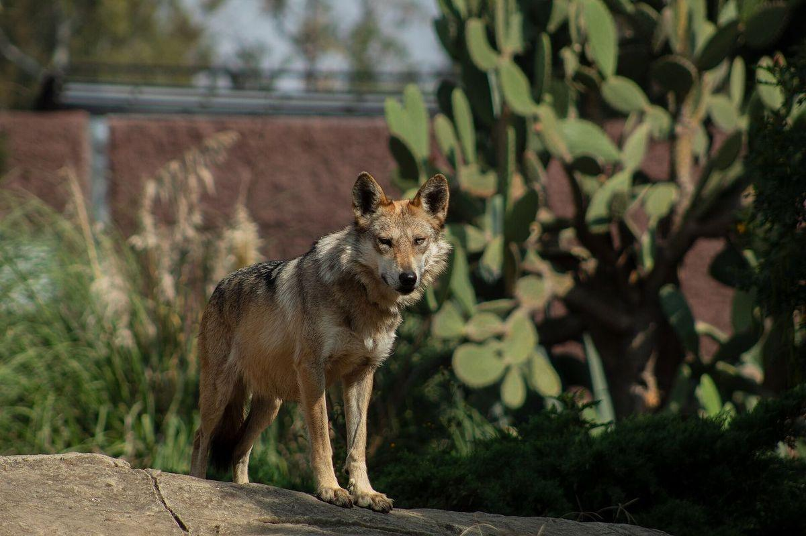
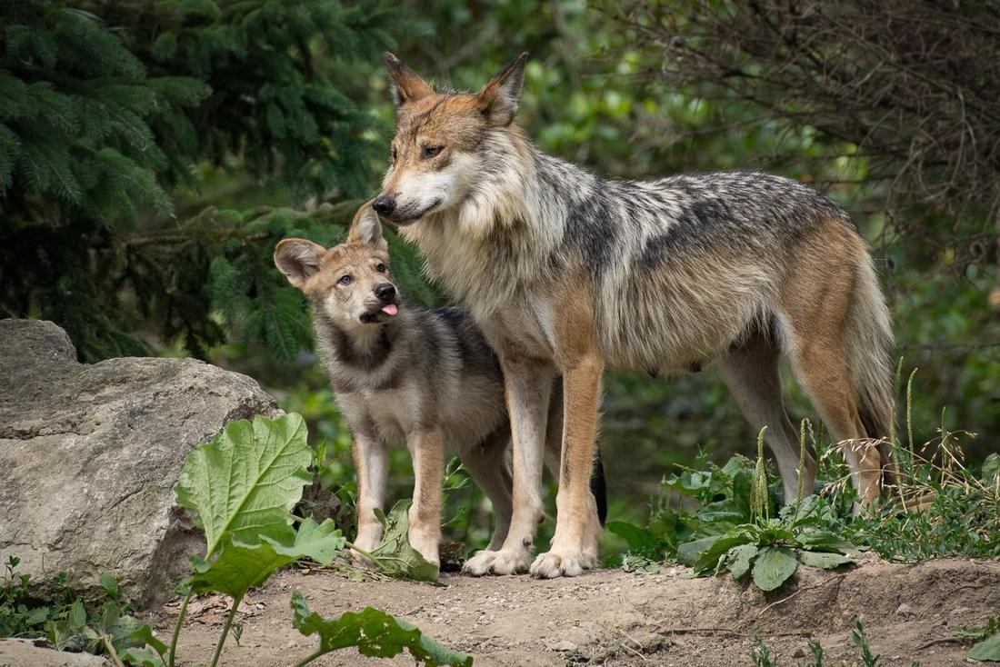
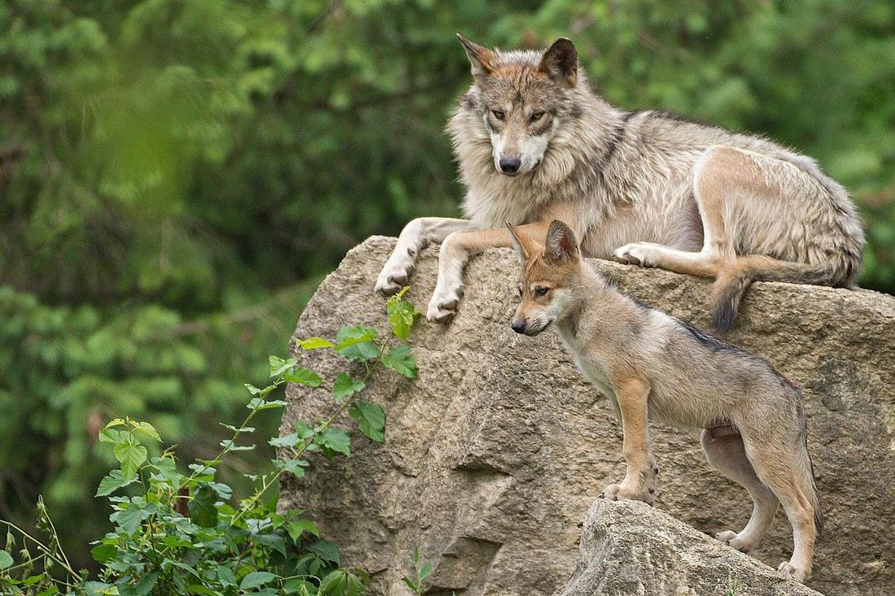

¿Cuántos lobos mexicanos viven en libertad en México?
35 a 40
En la sierra de Chihuahua.
Volvió. Conócelo.
Cuidando a México, A.C. es una asociación de estudiantes que da a conocer al lobo gris mexicano.

El lobo
El 90 por ciento de su territorio era México
El lobo gris mexicano (Canis lupus baileyi) es la subespecie más pequeña de lobo gris.
- Peso
- Entre 21 y 41 kilogramos.
- Medidas
- Entre 140 y 180 centímetros del hocico a la cola; altura hasta el lomo de 65 a 80 centímetros.
- Dieta en México
- 25 presas silvestres y tres domésticas; la presa principal es el venado cola blanca.
- Manada
- Organizada alrededor de una pareja reproductiva, los individuos llamados "alfa".
Una subespecie es una población de la misma especie que, por haber vivido separada, tiene rasgos propios. La distribución histórica del lobo gris mexicano abarcó el sur de Estados Unidos, en Arizona, Nuevo México y Texas, y llegó por el sur hasta la cuenca del Valle de México. Dentro de México se le conoció en Chihuahua, Coahuila, Nuevo León, Durango, Zacatecas, Aguascalientes, San Luis Potosí, el Bajío y la meseta central, y hasta Oaxaca.
Según el reportaje de UNAM Global, el 90 por ciento de esa distribución correspondió a territorio mexicano. Hoy, en México, los lobos en libertad están en la sierra de Chihuahua; en Estados Unidos, la recuperación se concentró en Arizona y Nuevo México.

El exterminio
Fue una decisión
La desaparición del lobo mexicano fue el resultado de una política.
"Nunca antes se empleó a tantos exterminadores de depredadores para destruir a tan pocos animales y producir tan dudosos beneficios"
La campaña de exterminio surgió en Estados Unidos a principios del siglo XX y llegó a México décadas más tarde. El lobo quedó exterminado de vida libre alrededor de 1970, por campañas de erradicación de ambos gobiernos en respuesta al conflicto ganadero.
Hacia los años setenta quedaban menos de 50 lobos en México, todos en la Sierra Madre Occidental.

El regreso
Cinco lobos de Durango
Todos los lobos mexicanos que existen descienden de unos pocos animales capturados en los años setenta. Esta es la historia, año por año.
-
1971
El Servicio de Pesca y Vida Silvestre de Estados Unidos contrató a Roy McBride, trampero de las campañas de exterminio, para atrapar ejemplares vivos. Con el tiempo capturó cinco lobos en la región de Durango, que formaron el pie de cría, es decir, los animales de los que descienden los demás, conocido como "Linaje McBride".

Dos lobos mexicanos en cautiverio en el zoológico Sahuatoba, Durango. Vaquita marina, 2026. CC BY-SA 4.0. La foto no tiene relación con los cinco fundadores. Crédito completo. -
1976
Ya extinto en Estados Unidos, el lobo fue incluido en la ley de especies en peligro de ese país, lo que obligó a crear un programa de recuperación.
-
Los fundadores
Todos los ejemplares actuales descienden de "unos pocos que fueron capturados en los años 70, en el norte de México". Según el reportaje de Mongabay Latam, fueron siete individuos fundadores. El programa describe su acervo génico (el conjunto de genes de la población) como "sumamente pobre" y habla de un cuello de botella. Un cuello de botella genético es una pérdida drástica de diversidad genética por descender de muy pocos individuos; su consecuencia es la endogamia, la reproducción entre parientes cercanos.
-
1998
Las primeras liberaciones ocurrieron hacia 1998 en Arizona y Nuevo México. La reintroducción es la liberación, en un territorio donde la especie desapareció, de ejemplares criados en cautiverio para que vuelvan a vivir en libertad.
-
2009
Había más de 300 ejemplares en cautiverio en Estados Unidos y México. México todavía no había llevado a cabo la reintroducción.
-
2011
Comenzaron las liberaciones en México, en Chihuahua.
-
2014
Nació la primera camada en vida libre en el país, más de cuarenta años después del exterminio.
-
2021
En México se estimaban unos 35 individuos, con 15 liberaciones en diez años; en Estados Unidos había alrededor de 160 lobos.
-
2026
Mongabay Latam calcula entre 35 y 40 lobos en la sierra de Chihuahua. En cautiverio hay 116 lobos en 23 instituciones mexicanas, dentro de un comité binacional de manejo genético. En Estados Unidos había al menos 286 en 2024.

Ejemplar en cautiverio en el zoológico de San Juan de Aragón, Ciudad de México. Esparquilin, 2021. CC BY-SA 4.0. Recortada. Crédito completo.
El estatus oficial
De la E a la P
En México, el estatus de una especie se fija en la Norma Oficial Mexicana NOM-059-SEMARNAT-2010, publicada en el Diario Oficial de la Federación.
La norma clasifica a las especies nativas en categorías de riesgo, es decir, niveles que indican qué tan cerca está una especie de desaparecer, y se actualiza con modificaciones publicadas en el mismo medio. Las dos filas siguientes se copiaron del Anexo Normativo III de cada publicación; los campos se separan con una barra vertical, como en la tabla original.
Norma Oficial Mexicana NOM-059-SEMARNAT-2010, publicada el 30 de diciembre de 2010
CarnivoraCanidaeCanislupusbaileyi–lobo mexicano, lobo grisno endémicaE–
Categoría E, probablemente extinta en el medio silvestre.
Modificación del Anexo Normativo III, Lista de especies en riesgo de la NOM-059-SEMARNAT-2010, publicada el 14 de noviembre de 2019
CanidaeCanislupussubsp.baileyiE.W. Nelson & Goldman, 1929Canis nubilus baileyilobo gris mexicano, lobo mexicanoP
Categoría P, en peligro de extinción. Es la categoría vigente.
En 2010 se le consideraba probablemente desaparecida del medio silvestre. En 2019, con lobos ya en libertad, la norma la clasifica en peligro de extinción, categoría que corresponde a una especie presente en el medio silvestre.
En peligro
Tres razones para seguir en peligro
Su regreso no resolvió su situación. Tres causas explican esa fragilidad; la asociación atiende dos.
-
El conflicto con la ganadería
"Los conflictos percibidos y reales con el sector ganadero persisten, y siguen siendo el principal factor de mortalidad para los lobos en el país". Según el investigador Stewart Breck, la recuperación no ocurre en grandes áreas protegidas, sino en paisajes compartidos con personas, sobre todo ganaderos. El origen está en la dieta: el ganado bovino es una presa "mucho más grande, abundante y fácil de cazar en la región" que las presas silvestres pequeñas.
Quién la atiende. El programa oficial, que contempla talleres con ganaderos y mecanismos de atención rápida a la depredación, es decir, a los ataques al ganado, y el Seguro de Ataque por Depredadores, que compensa las pérdidas desde 2009. La asociación no trabaja con ganaderos ni compensa pérdidas; explica el conflicto como un problema real, con sus cifras y sus medidas.
-
El rechazo social y el desconocimiento
Enrique Martínez Meyer, investigador de la Universidad Nacional Autónoma de México (UNAM), sostiene que el problema no es si hay suficiente bosque, sino si las personas están dispuestas a tolerar a los lobos. En la Reserva de la Biosfera Sierra Gorda, Querétaro, el 62 % de los encuestados no considera importante la presencia del puma y el jaguar. En Jalisco, solo el 3.6 % de los niños de una reserva dibujó al jaguar como parte de su entorno. La evidencia sobre percepción proviene del jaguar y el puma, no del lobo; por eso solo puede afirmarse que la educación podría cambiar la percepción del lobo.
Quién la atiende. La asociación: campañas 1 y 3, actividades 1 a 4.
-
Una población pequeña y reciente
Entre 35 y 40 lobos en la sierra de Chihuahua forman una población pequeña y reciente. Incluso sin intervención humana, la mortalidad alcanza el 45 % en las crías de un año y el 10 % en los adultos. En Estados Unidos, reducir las remociones de lobos (su captura por atacar ganado) favoreció el crecimiento de la población. En 2025 se presentó en el Congreso de Estados Unidos el proyecto HR 4255, que propone retirar al lobo mexicano de la lista de especies protegidas.
Quién la atiende. La asociación: campañas 2 y 3, actividades 2, 5 y 6.
Campaña 1
Mito y dato
Seis cosas que se dicen del lobo mexicano, cada una con el dato que la corrige y su fuente.
-
Mito El lobo mexicano es enorme.
Dato Es la subespecie más pequeña de lobo gris y pesa entre 21 y 41 kilogramos.
-
Mito Solo come ganado.
Dato En México se le han registrado 25 presas silvestres y tres domésticas; su presa principal es el venado cola blanca.
-
Mito Ya no existe.
Dato Se libera en México desde 2011 y en 2026 viven entre 35 y 40 lobos en la sierra de Chihuahua.
-
Mito El lobo es un animal solitario.
Dato Forma manadas organizadas alrededor de una pareja reproductiva, los individuos llamados "alfa".
-
Mito El lobo mexicano es un animal de Estados Unidos.
Dato El 90 por ciento de su distribución histórica estuvo en México, desde Chihuahua hasta Oaxaca.
-
Mito Desapareció por sí solo.
Dato Fue exterminado de la vida libre alrededor de 1970 por campañas de erradicación de los gobiernos de Estados Unidos y México.
Pieza 1 de 6
Estas seis piezas son la campaña "Mito y dato" de la asociación (Anexo C del trabajo escrito). El enunciado de cada mito es propuesta de la asociación; los datos son del trabajo escrito y sus fuentes están al final de la página.
La asociación
Cuidando a México, A.C.
Una asociación civil de estudiantes dedicada a la educación ambiental y a la difusión sobre el lobo gris mexicano. No libera lobos, no trabaja con ganaderos, no compensa pérdidas ni cambia leyes: informa, enseña y difunde.
Misión
Somos Cuidando a México, A.C., una asociación de estudiantes que da a conocer al lobo gris mexicano: llevamos a escuelas y redes información con fuentes sobre su historia, su situación y el programa que lo está recuperando.
Visión
En 2036, el lobo gris mexicano es una especie conocida en las escuelas de México: los estudiantes saben que volvió, que está en peligro y que existe un programa para recuperarlo.
Volvió. Conócelo.
Valores
- Información con fuentes
- Todo dato que difundimos lleva su fuente y dónde encontrarlo (página o sección). No usamos cifras que no podamos respaldar, ni mitos "a favor" del lobo.
- Claridad
- Explicamos cada término la primera vez (subespecie, endogamia, reintroducción). Si un estudiante de secundaria no lo entiende, lo reescribimos.
- Colaboración, no sustitución
- No hacemos el trabajo del programa oficial de conservación: lo difundimos, le pedimos información y canalizamos a él las preguntas que no nos corresponden.
- Constancia
- Una plática sola no cambia lo que alguien cree. Cada escuela que recibe la plática recibe también la guía, y la exposición visita a las escuelas que la soliciten dentro del mismo ciclo escolar.
- Respeto por quienes viven con el lobo
- Ninguna pieza ridiculiza ni culpa al ganadero que pierde animales. El conflicto con la ganadería se explica como un problema real, con sus cifras y sus medidas, porque sin ese respeto ningún dato sobre el lobo será escuchado.
Organigrama
Cuidando a México se organiza en una dirección general y tres coordinaciones, una por integrante. Cada puesto aparece en al menos una campaña o actividad.
Dirección general
Representa a la asociación, gestiona la vinculación con el programa oficial de conservación y con los centros de conservación, y administra los recursos.
Actividades 5 y 6
Coordinación de educación
Diseña e imparte las pláticas en escuelas y elabora la guía didáctica para docentes.
Actividades 1 y 4
Coordinación de contenidos e investigación
Verifica cada dato con su fuente y arma los textos de la exposición, de la serie "mito y dato" y del informe anual.
Actividades 2, 3 y 6; verifica las tres campañas
Coordinación de comunicación y campañas
Produce las campañas (carteles, redes, diseño de la exposición) y mide su alcance.
Campañas 1, 2 y 3; actividades 2 y 3
Tres campañas de publicidad
-
Campaña 1 "Mito y dato"
Causa que ataca. El rechazo social y el desconocimiento.
Objetivo. Sustituir los mitos sobre el lobo mexicano por datos verificados.
Pieza. Seis imágenes con la fórmula "Mito / Dato / Fuente" y un cartel que reúne las seis (las seis piezas).
Por qué funcionaría. El programa oficial propone promover a nivel nacional la importancia del lobo en los ecosistemas y crear un sitio con información confiable y actualizada sobre la especie. Los autores del estudio de Jalisco recomiendan material educativo que explique el papel ecológico de los depredadores tope.
-
Campaña 2 "Está en peligro y tiene programa"
Causa que ataca. La población pequeña y reciente, vulnerable a la mortalidad por causas humanas.
Objetivo. Que el público sepa que el lobo mexicano está clasificado en peligro de extinción, que existe un programa oficial que lo recupera y que ese programa necesita respaldo social.
Pieza. Infografía con la línea de tiempo (la de esta página) y las dos filas del Diario Oficial de la Federación;; versión para redes y para cartel.
Por qué funcionaría. El componente de comunicación y difusión del programa oficial tiene por objetivo dar a conocer a la sociedad la problemática y los programas en torno al lobo.
-
Campaña 3 "Semana del lobo mexicano"
Causas que ataca. El rechazo social y el desconocimiento, y la población pequeña y reciente.
Objetivo. Concentrar en una semana al año la atención de una escuela sobre la especie, con exposición, plática de un especialista y concurso de carteles.
Mensaje central. "Una semana para conocer al lobo que México casi pierde."
Por qué funcionaría. El programa oficial prevé conferencias dirigidas a organizaciones, instituciones y sociedad civil y un emblema de conservación que se identifique con los niños. Esparza-Carlos et al. proponen promover al depredador como emblema regional mediante un concurso que convoque a niños y jóvenes.
Seis actividades para un ciclo escolar
-
Actividad 1 Pláticas "Conoce al lobo mexicano" en escuelas
Plática de 50 minutos en secundarias y bachilleratos, en tres partes: quién es el lobo mexicano, qué le pasó y qué pasa hoy. Antes y después se aplica un cuestionario de cinco preguntas. Causa: rechazo social y desconocimiento · Coordinación de educación · Dos escuelas por mes a partir del segundo trimestre.
-
Actividad 2 Exposición itinerante "El regreso del lobo"
Ocho paneles que se montan dos semanas en cada escuela o biblioteca: biología, distribución, exterminio, cautiverio y fundadores, liberaciones, estatus oficial con las dos filas del DOF, programa oficial y qué puede hacer cada quien. Causas: rechazo social y desconocimiento; población pequeña y reciente · Coordinación de contenidos e investigación (textos) y Coordinación de comunicación y campañas (diseño) · Se produce en el primer trimestre y rota el resto del año.
-
Actividad 3 Serie "mito y dato" en redes
Seis publicaciones con fuente, una cada dos semanas, con la fórmula de la campaña 1; se responden con fuente las preguntas del público. Causa: rechazo social y desconocimiento · Coordinación de contenidos e investigación y Coordinación de comunicación y campañas · Primer trimestre; se repite con datos nuevos cada semestre.
-
Actividad 4 Guía didáctica para docentes
Cuadernillo de 12 páginas con tres actividades para clase (línea de tiempo del lobo, mapa de distribución histórica y actual, debate "mito y dato") y la lista de fuentes. Causa: rechazo social y desconocimiento · Coordinación de educación · Segundo trimestre, lista antes de la primera plática; se entrega en cada plática de la actividad 1.
-
Actividad 5 Vinculación con el programa oficial y con centros de conservación
Solicitar información y materiales oficiales; invitar a una persona del programa o de un centro de conservación a la plática de la campaña 3; canalizar al programa las preguntas que no corresponden a la asociación. Causa: población pequeña y reciente · Dirección general · Una reunión o comunicación por semestre.
-
Actividad 6 Informe anual público "¿Cómo va el lobo mexicano?"
Documento de cuatro páginas con lo que el programa oficial y la prensa especializada reportaron en el año (población, liberaciones, cambios legales), con fuentes; se publica en redes y se entrega a las escuelas. Causa: población pequeña y reciente · Dirección general y Coordinación de contenidos e investigación · Una vez al año.
El año, trimestre por trimestre
Meses 1 a 3
Actividad 5: primera comunicación con el programa oficial. Actividad 2: producción de la exposición. Actividad 3: arranca la serie en redes. Campañas 1 y 2 en redes.
Meses 4 a 6
Actividad 4: guía didáctica, lista antes de la primera plática. Actividad 1: pláticas en escuelas, dos por mes. Actividad 2: primera sede.
Meses 7 a 9
Actividad 1 continúa. Actividad 2: segunda y tercera sede. Actividad 3: segunda serie con datos nuevos. Campaña 3: Semana del lobo mexicano en la escuela anfitriona.
Meses 10 a 12
Actividad 1 continúa. Actividad 5: segunda comunicación. Actividad 6: informe anual. Evaluación de los indicadores de las tres campañas y las seis actividades.
Cobertura de causas
| Causa | Campañas | Actividades |
|---|---|---|
| Rechazo social y desconocimiento | 1, 3 | 1, 2, 3, 4 |
| Población pequeña y reciente, vulnerable a la mortalidad por causas humanas | 2, 3 | 2, 5, 6 |
Cada campaña y cada actividad ataca al menos una de las dos causas, y cada puesto del organigrama aparece en al menos una. El conflicto con la ganadería se explica como contexto; corresponde al programa oficial y al seguro por ataque de depredadores.
Ciclo de vida
Un año en la vida de un lobo
Las fases se describen con los datos del programa oficial de conservación, que en su mayor parte provienen de la población en cautiverio, y con el estudio de dieta en vida libre. El programa no indica la edad a la que la especie alcanza la madurez sexual; ese dato no se incluye.
-
Apareamiento y gestación
EneFebMarAbrMayLas hembras tienen un solo periodo de celo al año, que suele iniciar en la segunda mitad del invierno. En la población en cautiverio el apareamiento va de la segunda semana de enero a la tercera de abril, y la mayoría de los eventos reproductivos exitosos ocurre entre la segunda semana de febrero y la primera de marzo. La gestación dura unos 63 días. Solo se reproduce la pareja alfa de cada manada.
-
Nacimiento
EneFebMarAbrMayLos nacimientos se presentan de la primera semana de abril a la primera de mayo, concentrados en la tercera semana de abril. Cada camada consta de 3 a 7 crías, y la proporción de machos y hembras al nacer es cercana a 1:1. En México, la primera camada nacida en libertad se registró en 2014.;

Hembra y cría de lobo mexicano en cautiverio. Bob Haarmans, 2016. CC BY 2.0. La ficha no indica el lugar. Crédito completo. -
Crecimiento
Durante el crecimiento, el paso de la leche materna a la carne se relaciona con la aparición y la madurez de los dientes. Es la etapa más frágil: en poblaciones sin intervención humana muere en promedio el 45 % de las crías de alrededor de un año.

Cría de lobo mexicano en cautiverio, zoológico de Brookfield, Estados Unidos. Bob Haarmans, 2016. CC BY 2.0. Recortada. Crédito completo. -
Juventud y dispersión
A los pocos años, los hijos mayores abandonan la manada y viven solitarios hasta encontrar pareja, o conservan ese carácter toda su vida. El programa llama dispersión a ese proceso, en el que los jóvenes se separan de su grupo natal y ocupan nuevos territorios; es la vía por la que los lobos liberados se expanden.
-
Adultez y reproducción
El adulto pesa entre 21 y 41 kilogramos y mide de 140 a 180 centímetros del hocico a la cola. Vive en manadas organizadas alrededor de la pareja alfa, que es la única que se reproduce. En México su dieta registra 25 presas silvestres y tres domésticas; la principal es el venado cola blanca.;
-
Longevidad y mortalidad
En cautiverio ha llegado a vivir hasta 15 años; en libertad se calcula que vive entre 7 y 8. Las causas de muerte son enfermedades, mala nutrición, heridas, peleas dentro de la manada y el conflicto con el ganado; sin intervención humana muere en promedio el 10 % de los adultos cada año.
Fuentes
Fuentes y créditos
Todo lo que dice esta página sale de estas fuentes, las mismas del trabajo escrito, en formato APA.
Bibliografía
- Anaya-Zamora, V., López-González, C. A. y Pineda-López, R. F. (2017). Factores asociados al conflicto humano-carnívoro en un Área Natural Protegida en el centro de México. Ecosistemas y Recursos Agropecuarios, 4(11), 381-393. https://doi.org/10.19136/era.a4n11.1108
- Arellano, A. (2026, 17 de febrero). Lobo mexicano: crecen los riesgos genéticos, conflictos con la ganadería y amenaza legal a 28 años de su reinserción. Mongabay Latam. https://es.mongabay.com/2026/02/lobo-mexicano-riesgos-geneticos-conflictos-ganaderia-amenaza-legal/
- Comisión Nacional de Áreas Naturales Protegidas. (2009). Programa de acción para la conservación de la especie: Lobo gris mexicano (Canis lupus baileyi). Secretaría de Medio Ambiente y Recursos Naturales. https://www.gob.mx/cms/uploads/attachment/file/251983/PACE_Lobo_Mexicano_2009.pdf
- Comisión Nacional de Áreas Naturales Protegidas. (2015). Lobo mexicano (Canis lupus baileyi). Programa de Conservación de Especies en Riesgo. https://conanp.gob.mx/conanp/dominios/especies/WEB/lobo-mexicano.php
- Comisión Nacional para el Conocimiento y Uso de la Biodiversidad. (s.f.). Lobo mexicano (Canis lupus subsp. baileyi). Enciclovida. Recuperado el 16 de septiembre de 2026, de https://enciclovida.mx/especies/38345-canis-lupus-baileyi
- Esparza-Carlos, J. P., Gerritsen, P. R. W., López-Parraguirre, S. A., García-Rojas, M. D. y Peña-Mondragón, J. L. (2019). Cómo perciben los niños el jaguar, Panthera onca (Carnivora: Felidae) en Jalisco, México. Revista de Biología Tropical, 67(3), 380-395. https://www.scielo.sa.cr/scielo.php?script=sci_arttext&pid=S0034-77442019000300380
- Olguín Lacunza, M. (2021, 29 de abril). UNAM busca salvar al lobo mexicano de la extinción. UNAM Global. https://unamglobal.unam.mx/global_revista/unam-busca-salvar-al-lobo-mexicano-de-la-extincion/
- Procuraduría Federal de Protección al Ambiente. (2019, 9 de diciembre). Identificación de grandes carnívoros silvestres en México. Gobierno de México. https://www.gob.mx/profepa/articulos/89627
- Reyes-Díaz, J. L., Lara Díaz, N. E. y López-González, C. A. (2022). ¡Qué dientes tan grandes tienes! Un vistazo a la dieta del lobo mexicano. Revista Digital Universitaria, 23(2). https://doi.org/10.22201/cuaieed.16076079e.2022.23.2.2
- Secretaría de Medio Ambiente y Recursos Naturales. (2010, 30 de diciembre). Norma Oficial Mexicana NOM-059-SEMARNAT-2010, Protección ambiental—Especies nativas de México de flora y fauna silvestres—Categorías de riesgo y especificaciones para su inclusión, exclusión o cambio—Lista de especies en riesgo. Diario Oficial de la Federación. https://dof.gob.mx/nota_detalle.php?codigo=5173091&fecha=30/12/2010
- Secretaría de Medio Ambiente y Recursos Naturales. (2019, 14 de noviembre). Modificación del Anexo Normativo III, Lista de especies en riesgo de la Norma Oficial Mexicana NOM-059-SEMARNAT-2010. Diario Oficial de la Federación. https://dof.gob.mx/nota_detalle.php?codigo=5578808&fecha=14/11/2019
Fotos y mapa
Todas las imágenes son de Wikimedia Commons, con licencia libre. Ninguna fue generada ni retocada con inteligencia artificial; solo se recortaron y redimensionaron. En Commons no hay fotos de lobos en libertad en Chihuahua: los lobos de esta página son ejemplares en cautiverio o fotos de archivo, y cada pie lo dice.
- Apertura. Canis lupus baileyi running. Jim Clark, U.S. Fish and Wildlife Service, 6 de diciembre de 2001. Dominio público (obra de un empleado del USFWS). Página del archivo en Commons. Redimensionada.
- Territorio. Sierra Madre Occidental vista desde el Cerro Grande. Levi bernardo, 17 de septiembre de 2018. CC BY-SA 3.0. Página del archivo en Commons. Recortada y redimensionada.
- Mapa base. BlankMap-North America-Subdivisions. NuclearVacuum, 2010. CC BY-SA 3.0. Página del archivo en Commons. Recortado a México y el suroeste de Estados Unidos, simplificado y coloreado; el derivado se comparte bajo la misma licencia.
- Exterminio. Mexican wolf standing near rocky area. Warren Garst (1922-2016), marzo de 1967; Colorado State University Libraries, a través de la Digital Public Library of America. CC BY-SA 4.0. Página del archivo en Commons. Redimensionada.
- 1971. El lobo mexicano en el zoológico de Durango. Vaquita marina, 6 de abril de 2026. CC BY-SA 4.0. Página del archivo en Commons. Redimensionada.
- 2026. Lobo mexicano en cautiverio. Esparquilin, 12 de octubre de 2021. CC BY-SA 4.0. Página del archivo en Commons. Recortada y redimensionada.
- Nacimiento. Mom and kit 2. Bob Haarmans, 11 de julio de 2016. CC BY 2.0. Página del archivo en Commons. Redimensionada.
- Crecimiento. Mexican Wolf Pup. Bob Haarmans, 3 de julio de 2016. CC BY 2.0. Página del archivo en Commons. Recortada y redimensionada.
{kind=link}
{kind=link}
{kind=link}
{kind=link}
{kind=link}
{kind=link}
{kind=link}
.jpg){kind=link}
Tipografía y código
Tipografías Newsreader (Production Type) y Atkinson Hyperlegible Next (Braille Institute), con licencia Open Font License, servidas por Google Fonts. La página es HTML, CSS y JavaScript sin dependencias; todo movimiento se desactiva cuando el sistema pide reducir el movimiento.